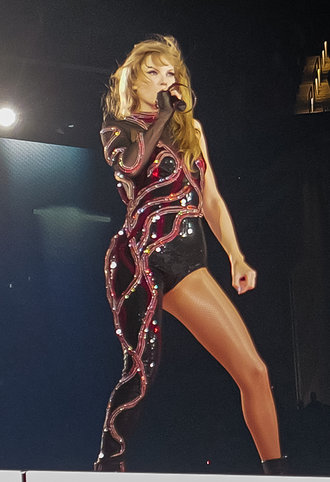

A Celebration of Taylor Swift's Music
Taylor Swift is a global phenomenon, known for her storytelling through heartfelt lyrics and diverse musical styles. This page is a tribute to her incredible journey, exploring each of her iconic studio albums and the magic they hold for fans around the world. Join us as we learn about the eras that have defined a generation of music lovers.
Taylor Swift (2006)
Her self-titled debut album introduced the world to a young country singer with a knack for relatable tales of teenage life and first love. Tracks like "Tim McGraw" and "Teardrops on My Guitar" established her as a rising star in Nashville.

Fearless (2008)
Fearless marked Taylor's crossover into the pop mainstream, with anthems of romance and fairytale narratives. "Love Story" and "You Belong With Me" became instant classics, earning her multiple awards.

Speak Now (2010)
Written entirely by Taylor herself, Speak Now showcased her growth as a songwriter, delivering powerful ballads and rock-infused tracks like "Mine" and "Mean."

Red (2012)
Exploring a wider range of emotions and sounds, Red featured collaborations and genre-bending hits like "We Are Never Ever Getting Back Together" and the emotional ballad "All Too Well."

1989 (2014)
A full-fledged pop transition, 1989 brought us iconic synth-pop anthems like "Shake It Off" and "Blank Space," solidifying Taylor's status as a pop superstar.

Reputation (2017)
Embracing a darker, edgier sound, Reputation was a response to public scrutiny, delivering powerful tracks like "...Ready For It?" and "Delicate."

Lover (2019)
A vibrant and romantic era, Lover celebrated love and joy with catchy tunes like "ME!" and the title track "Lover."

folklore (2020)
A surprise release during the pandemic, folklore showcased Taylor's storytelling prowess with indie folk narratives and evocative imagery in songs like "cardigan" and "exile."

evermore (2020)
A sister album to folklore, evermore continued the indie folk exploration with intricate storytelling and collaborations, featuring tracks like "willow" and "champagne problems."

Midnights (2022)
A concept album exploring sleepless nights and introspective thoughts, Midnights delivered synth-pop hits like "Anti-Hero" and "Lavender Haze."

The Tortured Poets Department (2024)
Her latest album, The Tortured Poets Department, delves into themes of heartbreak and reflection with her signature poetic lyricism. Tracks like Fresh Out The Slammer are already captivating fans.

My Favorite Era: Reputation
I love the intense backing tracks and green/red aesthetic of this era!.
Taylor Swift Studio Album Discography
- Taylor Swift (2006)
- Fearless (2008)
- Speak Now (2010)
- Red (2012)
- 1989 (2014)
- Reputation (2017)
- Lover (2019)
- folklore (2020)
- evermore (2020)
- Midnights (2022)
- The Tortured Poets Department (2024)
Album Statistics
| Album | Release Year | Notable Single |
|---|---|---|
| Taylor Swift | 2006 | Teardrops on My Guitar |
| Fearless | 2008 | Love Story |
| Speak Now | 2010 | Mine |
| Red | 2012 | All Too Well |
| 1989 | 2014 | Shake It Off |
| Reputation | 2017 | ...Ready For It? |
| Lover | 2019 | Lover |
| folklore | 2020 | cardigan |
| evermore | 2020 | willow |
| Midnights | 2022 | Anti-Hero |
| The Tortured Poets Department | 2024 | But Daddy I Love Him |